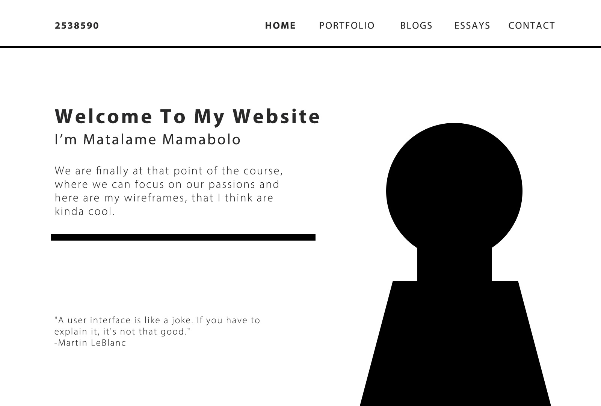
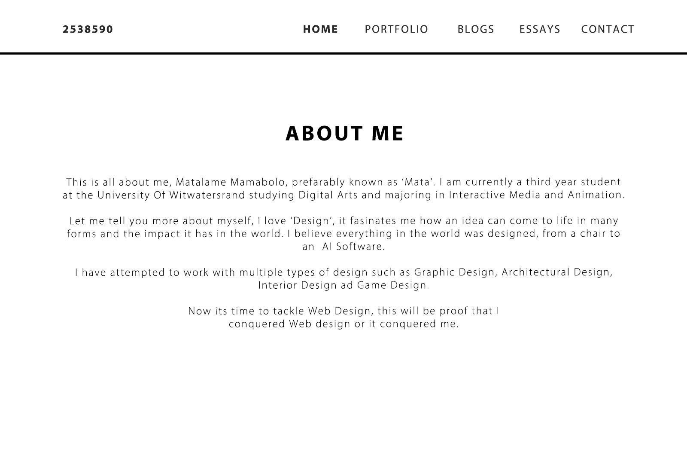
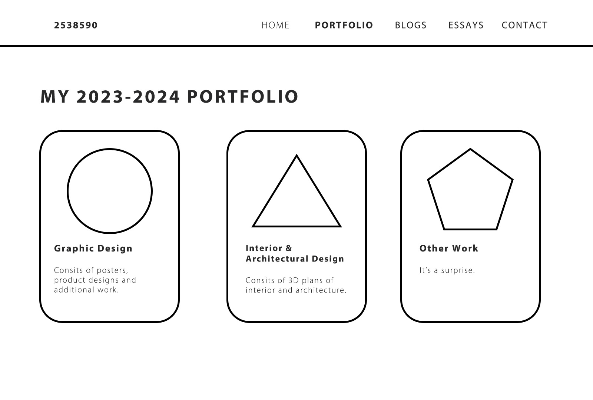
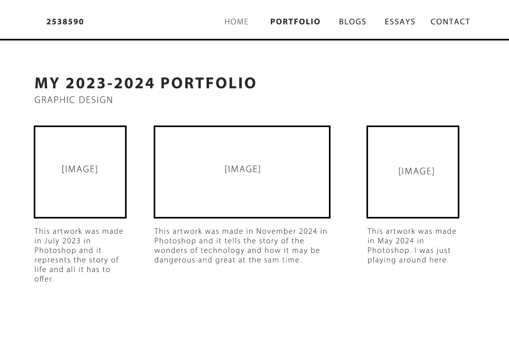
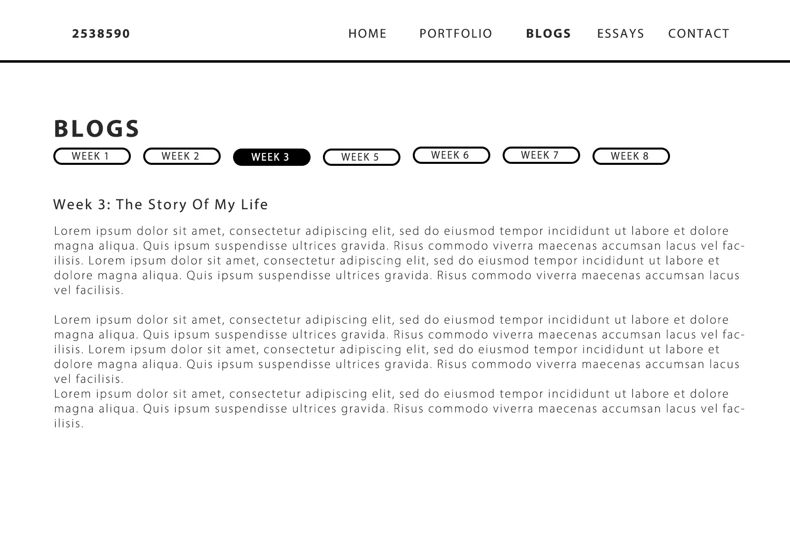
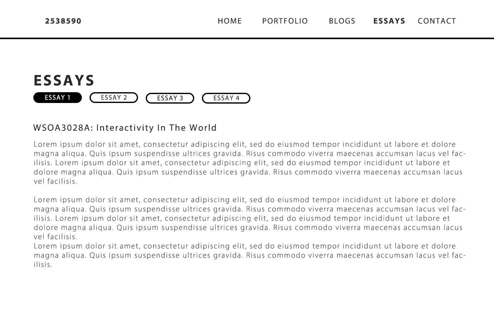
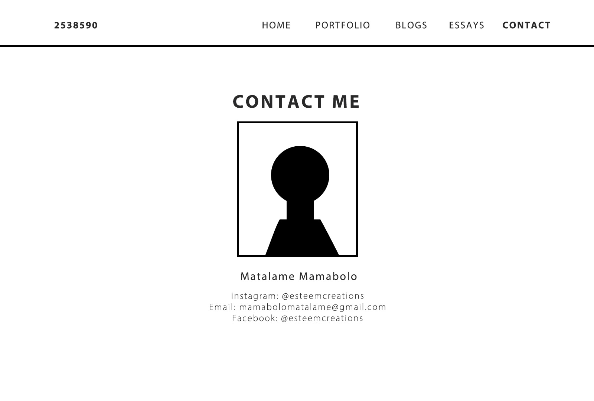

Wireframes
Wireframe 1

I would want to structure my home page like this, with user interface buttons that help the user navigate through the website just from clicking. I want to include an image of myself but I’m also considering putting a silhouette of myself, like the image portrays. I would also want to include a quote about Interactivity just as an icebreaker.
Wireframe 2

This is part of the home page. It includes a little overview about myself, my interests, my goals and just some random stuff.
Wireframe 3

This is the page that takes the user to the different categories of my portfolio and these will be user interface buttons that will take the user to the respective pages with the images and information of my portfolio.
Wireframe 4

This is how the portfolio page will look like, it includes images of the work and descriptions of the work.
Wireframe 5

This is how the blog page will look and there will be user interface buttons that will allow the user to choose which blog they want to read.
Wireframe 6

The essay page is similar to the blogs page.
Wireframe 7

This is the contact page that will include all my necessary details.